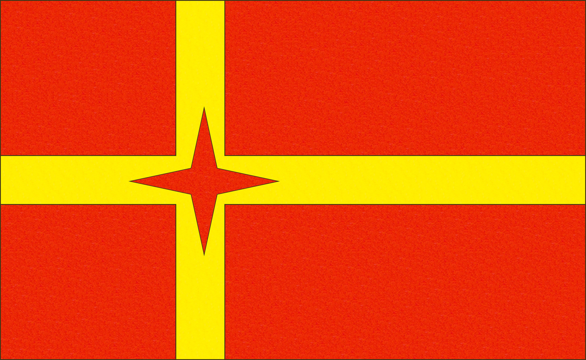

Bock, A. Jääkärien tulo Vaasaan 1918. Vaasan sotaveteraanimuseo.
Helmikuun vallankumous vuonna 1917 merkitsi Venäjällä valtaa pitävän keisarillisen hallinnon loppua.
Vallankumouksen tuulet puhalsivat myös suuriruhtinaskuntaan, missä tapahtunutta juhlittiin laajasti sekä
vasemmiston että kansallismielisten kesken. Sortokausien aikana pannaan joutuneet leijonaliput kaivettiin nyt
esille. Mutta vaikka helmikuun vallankumous toi mukanaan lupaavan alun, itsenäistymisen tie Suomessa ei ollut
suoraviivainen eikä helppo. Alkuperäinen yhteishenki ja yhtenäisyys, joka oli hallinnut kansan keskuudessa
vallankumouksen jälkeen, alkoi nopeasti murtua. Kiista itsenäisen Suomen lipusta jäi nopeasti toissijaiseksi
kun erimielisyydet Suomen tulevaisuudesta siirtyivät pois
rauhanomaisista keinoista.
Vuoden 1917 lippukomitea
Suomen itsenäisyysjulistuksen ollessa vielä tekeillä, senaatti päätti 04.12.1917 asettaa lippukomitean valmistamaan
ehdotusta Suomen kansallis- ja sotalipuksi. Komitea koostui kauppaneuvos Lars Krogiuksesta, arkkitehti Eliel Saarisesta
ja fil. tri. U.T. Sireliuksesta. Valtiolipuksi komitea päätyi ehdottamaan punaista leijonalippua ja kauppalipuksi
yksinkertaisempaa punakeltaista ristilippua. Jotta kauppalippu erottuisi merellä Tanskan lipusta, komitea lisäsi yhdeksän
valkoista ruusua ylempään sisänurkkaan.
Komitea perusteli esitystään seuraavanlaisesti:
» Valtiolipuksi on komitea heraldiikkaan nojaten ehdottanut kokonaan karmiinisinoberipunaista vaatetta,
jonka keskellä on tankoa vastaan kääntyvä Suomen vaakunan leijona kullankeltaisin ja valkoisin värein.
Leijonalippu ei kuitenkaan vaikean tekotapansa vuoksi sovi kauppalipuksi, koska on välttämätöntä merenkulussa,
että lippu on siksi yksinkertainen, että sen voi laivassa valmistaa, jos se on myrskyssä repeytynyt tai ehkä
kokonaan turmeltunut.
Merenkulku- ja kauppalipuksi on komitea sentähden, omaksuen Skandinavian maitten
ristilippumuodon ehdottanut lipun, jonka pohjaväri olisi punainen ja risti keltainen. Mutta jotta se selvästi
eroaisi Tanskan kauppalipusta ja eräästä kansainvälisestä signaalilipusta, ehdottaa komitea, että Suomen
kauppalippuun, joka olisi punainen, keltaisen pystyristin neljän suorakaiteeseen jakama vaate, tangonpuoleiseen
ylimmäiseen suorakaiteeseen pantaisiin Suomen vaakunan yhdeksän vaikosta ruusua.
Sekä valtio- että
kauppalipun mittasuhteet on ehdotettu samoiksi: leveys seitsemäntoista yksikkömittaa ja pituus kaksikymmentäkuusi
yksikkömittaa. »
[lähde]
Ensimmäinen lakiesitys
Komitean ehdotusta käsiteltiin senaatissa 21.12.1917. Leijonalippu päätettiin hyväksyä, mutta kauppalippu
muutettiin Senaattori Alexander Freyn ehdotuksen mukaisesti. Valkoiset ruusut poistettiin ja keltaristi
reunustettiin sinisellä ja valkoisella raidalla. Kauppalipun ja leijonalipun mitat olisivat edelleen 26x17 yksikköä.
Kauppalipun suorakulmioiden korkeus olisi 6,5 yksikköä ja sisempien leveys 8 sekä ulompien 14. Keltaisen ristin
leveys olisi 2,5, sinisen 0,4 ja valkoisen 0,35.
[lähde]
Hallitus perusteli lakiehdotustaan:
» Asiasta Senaatissa käsiteltäessä on johduttu sellaiseen tulokseen, että Eduskunnan hyväksyttäväksi esitetään:
että edellämainittu komitean ehdottama n. s. leijonalippu säädetään erikoiseksi Suomen valtiolipuksi, jonka
käyttämisestä hallitus antaa tarkempia määräyksiä; että merenkulku- ja kauppalipuksi määrätään kummankin
edellämainitun väriyhdistelmän kannattajain mielipiteitten tukema ristilippu, jonka punaisella pohjalla on
sinivalkoisen raidan reunustama kullankeltainen pystyristi. Näin muodostettu lippu on muitten maitten lipuista
selvästi eroava, Suomen kansalle rakkaaksi käyneet vaakunavärit soinnukkaasti yhdistävä lippu. »
[lähde]
Senaatissa esitettiin myös muita vaihtoehtoja kauppalipuksi. Senaattori Louhivuori ehdotti kauppalipuksi
siniristiä valkoisella taustalla, jossa leijonavaakuna sijoitettaisiin ylempään sisänurkkaan. Senaattori
Pehkonen vuorostaan olisi muuttanut komitean ehdotusta vaihtamalla ruusujen taustan siniseksi.
[Kajanti 1983:430]
Ulkoasiainvaliokunnan väliaikainen lippu
Eduskunnan ulkoasiainvaliokunta otti senaatin esityksen käsittelyyn, mutta valiokunta ei päässyt ratkaisuun
lain hyväksymisestä. Leijonalipusta oltiin montaa mieltä ja etenkin kauppalippua pidettiin huonona. Sen
sijaan valiokunta päätti 26.01.1918 suosittaa kilpailua johon kutsuttaisiin taitelijoita suunnittelemaan
lippuluonnoksia. Valiokunta päätti lisäksi esittää että siihen asti kunnes uudesta lipusta on päätetty,
tuli väliaikaisena lippuna käyttää kaksiraitaista sinivalkoista lippua.
» Suomen lippuna kuluvan vuoden toukokuun 1 päivään asti on käytettävä sinivalkoinen vaate, jonka pituus
on 26 yksikkömittaa ja leveys 17 yksikkömittaa ja joka on kokoonpantu kahdesta samankokoisesta suorakaiteen
muotoisesta kankaasta, sininen ylempänä, valkoinen alempana".
[lähde]
Valiokunnan väliaikainen lippu ei kuitenkaan koskaan ollut laajemmassa käytössä ja kilpailuakaan ei järjestetty.
Sisällissodan taistelut alkoivat seuraavina päivinä ja lippuasian käsittely eduskunnassa pysähtyi. Siirryttyään
Vaasaan sodan ajaksi, senaatti päätti 27.02.1918 kuitenkin hyväksyä alkuperäisen lakiesityksen jolloin leijonalippu
ja Freyn ehdottama kauppalippu saivat virallisen aseman valkoisessa Suomessa
[lähde].
Eduskunnan lippukeskustelu sisällissodan jälkeen
Sisällissodan päättymisen jälkeen lippukysymys nousi jälleen keskustelun keskiöön eduskunnassa. Punakeltaisten
ja sinivalkoisten värien välillä käytävä keskustelu jatkui, mutta sodan tuomat jännitteet kasvattivat kiistan
voimakkuutta entisestään. Aiemmin punakeltaisia värejä oli vastustettu niiden skandinavistisen luonteen vuoksi,
mutta nyt nuorsuomalaiset, maalaisliittolaiset ja suojeluskuntalaiset vastustivat punaista väriä
myös äskettäisen punakapinan vuoksi. Maalaisliiton perustaja Santeri Alkio sanoi:
» Joka tapauksessa minä panen erittäin merkitystä siihen, että kun me nyt virallisesti vahvistamme ensi kerran
Suomen lipun, olisi veristä pilkkaa ottaa Suomen lipuksi punainen silloin kun kerran Suomessa on täytynyt
punainen kapina kukistaa valkoisen merkeissä. »
[lähde]
Nuorsuomalaisten edustaja Ahmavaara oli samaa mieltä:
» Minun täytyy sanoa, että kun täällä pimeänä aikana, jolloin ryövärivalta vallitsi pääkaupungissa, näki punaista
lippua, niin kyllä se vei kaikki sympatiat sen puolelta, ja kun täällä pääsivät ihmiset valtaan ja loppui tuo
ryövärivalta ja senaatin katolle kohotettiin punainen leijonalippu, niin kyllä oli ikävää nähdä sitä. Moni
huokaisi, ettei väri muuttunutkaan, vaikka valta tuli jälleen sivistyneiden ihmisten käsiin. »
[lähde]
Ruotsalaiset kansanedustajat edelleen kuitenkin seisoivat leijonalipun ja punakeltaisen ristilipun takana.
Punakaartin punaliput eivät heidän mielissään olleet tahranneet Ruotsin vallan aikaisia värejä ja pohjoismainen
yhteys oli nuorelle Suomelle elintärkeä. Edustaja Schybergson vastasi punaista väriä vastustaville:
» En sano mitään niille, jotka ovat aina pitäneet kiinni sinisestä ja valkoisesta. Se on, kuten jäsen Hedberg
sanoi, makuasia, josta ei voi kiistellä. Minusta tuntuu kuitenkin oudolta, että niin monet niistä, jotka aiemmin
kannattivat punaista väriä, ovat nyt hylänneet sen viime kuukausien tapahtumien seurauksena. Ne saattoivat olla
kuinka kauheita tahansa, mutta se ei tarkoita, että punaisesta väristä voitaisiin luopua. Voimme pitää sen, ja
se pysyy kauniina. Jos kuitenkin haluamme tulla täysin valkoisiksi ja viattomiksi ja värittömiksi, meidän on
poistettava punainen matto, jolla istumme, ja sitten meidän on mentävä vielä pidemmälle, niin että esimerkiksi
vakuutusyhtiö Kullervo muuttaa nimensä niin, ettei se muistuta Kullervo Manneria. Näitä vertailuja voisi tehdä
loputtomiin. »
[lähde]
Maalaisliiton Juutilainen huomautti että sinivalkoinen ristilippu oli jo itsessään kompromissi:
» Huomautan kuitenkin, että lippuehdotus on sovittelun tulos jo siinäkin suhteessa, että se on ristilippu, kun
käytännössä täällä on ollut toisenlainen sini-valikoinen lippu. Se seikka jo kyllin osoittaa meidän yhteisyytemme
Skandinavian maiden kanssa.»
[lähde]
» Puolestani olen sitä mielipidettä, että n. s. leijonalippu, jossa on Suomen valkoinen ja värit,
punainen ja keltainen, on säilytettävä valtiolippuna, koska se on jo vakiintunut vapaustaistelussamme
aina vuodesta 1905 siihen saakka kun tämä lippu äsken nostettiin Viaporin harjalle. Puollan sitä
myöskin sotalipuksi.
Mitä kauppalippuun tulee, ehdotan, että siihenkin otettaisiin vaakunavärit
perusväreiksi. Nämä värit on jo otettu käytäntöön merenkulkulipussa ja soveltuvatkin siihen erittäin hyvin.
Kuitenkin voisi niiden lisäksi myöskin valkoista ja sinistä ottaa jollain tavoin yhdistettyinä tähän lippuun,
esimerkiksi sen ylempään, etupuoliseen kulmaan. Tällöin voisi ajatella sinistä alaa, jossa olisi vaakunassa
esiintyvät 9 valkoista ruusua. Mutta voisi myöskin jakaa alan aivan yksinkertaisesti siniseen ja valkoiseen,
mikä menettely ehkä olisi parempikin, koska tähtimäisille merkeille lipun alassa yleensä annetaan erikoinen
merkitys, niitä kun käytetään ilmaisemaan valtioliittoon kuuluvien liittovaltioiden lukua. »
[Kajanti 1983: 446-447]
Kompromissiehdotuksia
Kompromissina heräsi ajatus siniristilipusta valkoisella pohjalla, johon punaiset ja keltaiset värit
sijoitettaisiin jollain tavoin ylänurkkaan. Edustaja Kokko ehdotti suorakulmaisia kenttiä, jossa
keltainen olisi ylimpänä ja punainen alimpana. Edustaja Ingman puolestaan esitti että värit olisi
asetettava päinvastoin. K. J. Ståhlberg kritisoi suunnitelmia nurkan väreistä epäsymmetrisinä, ja
ehdotti että keltainen ja punainen tulisi sen sijaan sijoittaa siniristin ympärille kuin "rantuina".
Keskustelu jatkui perustuslakivaliokunnassa, missä pitkän väittelyn jälkeen edustajat päätyivät lopulta
ratkaisuun, jossa keltainen ja punainen sijoitettaisiin nurkkaan kolmioiden muodossa.
[Kajanti 1983: 433]
Gallen-Kallelan kannanotto
Valiokunta päätti pyytää Akseli Gallen-Kallelaa suunnittelemaan lippuluonnosta käyttäen valiokunnan
kolmiomallia pohjana. Gallen-Kallela oli tähän aikaan yleisesikunnassa töissä piirustuskonttorin
päällikkönä suunnittelemassa univormuja, mitaleita ja joukko-osastojen lippuja puolustuslaitokselle.
Hän kuitenkin piti valiokunnan sunnitelmaa "aivan hirveänä" ja kieltäytyi ottamasta vastaan kyseistä tehtävää.
Gallen-Kallelan mielestä lipussa tuli käyttää vaakunan punakeltaisia värejä ja oli piirtänyt jo keväällä
1918 kaksi luonnosta jossa punakeltaiset kaksoisristit asetettaisiin valkoiselle taustalle.
Gallen-Kallela, A. ehdotus Suomen lipuksi. Historian kuvakokoelma, Museovirasto.
[lähde]
Siniristilippu 1918, 1920 ja 1978
Gallen-Kallelan kieltäytyessä tehtävästä, hänen alaisensa Eero Snellman ja Bruno Tuukkanen päätyivät
suunnittelemaan lippuluonnokset. Snellman ja Tuukkanen eivät myöskään pitäneet valiokunnan pyyntöä
onnistuneena, etenkin punakeltaisen ylänurkan osalta. Sen sijaan he jättivät ylänurkan valkoiseksi
ja asettivat punakeltaiset värit valtiolipun ja sotalipun osalta siniristin keskelle leijonavaakunan
muodossa. Merenkulku- ja kauppalippu jäi puhtaan sinivalkoiseksi.
A.B. Öflund & Pettersson O.Y., p. Suomen valtiolippu.
[lähde]
A.B. Öflund & Pettersson O.Y., p. Suomen kauppa- ja merenkulkulippu 1918. Historian kuvakokoelma, Museovirasto
[lähde]
A.B. Öflund & Pettersson O.Y., p. Suomen Sotalippu.
[lähde]
Perustuslakivaliokunta hyväksyi Snellmanin ja Tuukkasen luonnokset ja laati lakitekstin perusteluineen:
» Valiokunta ei ole voinut yhtyä Hallituksen esityksessä olevaan ehdotukseen, jonka mukaan Suomen lipun
perusväreiksi tulisivat Suomen vaakunan värit, punainen ja. keltainen. Valkoista, ja sinistä on laajoissa
osissa maata jo pitkät ajat pidetty kansallisväreinä. Siniseltä väriltä ei meillä myöskään puutu historiallisia
juuria. Niinpä se on useitten maakuntavaakunain perusväri, ja eräissä niistä se esiintyy yhdistyneenä valkoiseen.
Valkoisen merkeissä on punainen hirmuvalta äsken kukistettu ja Suomen vapaus saavutettu. Valiokunta on sentähden
päättänyt Suomen lipun perusväreiksi ehdottaa valkoista ja sinistä. »
[lähde]
Valiokunnan ehdotus hyväksyttiin eduskunnassa 25.05.1918 ja laki Suomen lipusta vahvistettiin 29.05.1918.
Lipun vaakunamalli tarkentui kun Eric O. W. Ehdströmin vaakunaesitys vahvistettiin 17.11.1919. Myöhemmin
12.02.1920 eduskunnan n.k. Sinettikomitea muutti lipun vaakunan muotoa poistamalla vaakunan päältä kruunun
sillä se ei koettu enää tasavaltalaiselle Suomelle sopivaksi. Samoin vaakunan kilven muotoa muutettiin
nelikulmaisemmaksi jotta se olisi helpompi sommitella ristin keskelle.
A.B. Öflund & Pettersson O.Y., p. Suomen valtiolippu. Historian kuvakokoelma, Museovirasto.
[lähde]
A.B. Öflund & Pettersson O.Y., p. Suomen sotalippu. Historian kuvakokoelma, Museovirasto.
[lähde]
Vuonna 1978 Suomen lippu sai tämänpäiväisen muotonsa. Lipun määritelmä tarkistettiin ja päivitettiin
värien osalta uusien kansainvälisten standardien mukaisesti. Samalla vaakunaa muutettiin jälleen kerran.
Kilvestä poistettiin pohjaan jäänyt pieni kieleke ja leijona päivitettiin Olof Erikssonin vuonna 1970
piirtämään yksinkertaistettuun malliin.
Suomen lippu ja vaakuna. Historian kuvakokoelma, Museovirasto.
[lähde]
Muita ehdotuksia vuosilta 1917-19
Samaan aikaan kun lipusta väiteltiin eduskunnassa, käytiin lehdistössä myös asian tiimoilta vilkasta keskustelua.
Lippuehdotuksia oli taas tarjolla sekä yksityishenkilöiltä, lehdiltä että erinäisiltä seuroilta. Mielipiteet
jakautuivat edelleen punakeltaisten ja sinivalkoisten värien, leijonalipun ja ristilipun kannattajiin.
Insinööri Nybergin ehdotus
Insinööri Hugo Nyberg Joensuusta lähetti 09.12.1917 lippukomitean Uuno Sireliukselle ehdotuksen Suomen lipuksi.
Kauppalippu tuli ympäröidä joka reunalta valkoisella reunuksella. Postilippuun tulisi postitorvi sopivaan kohtaan
ja tullilippuun merkuriuksen sauva.
[Kajanti 1983: 420]

Helsingin suomalaisen seuran ehdotus
Helsingin suomalainen seura antoi eduskunnalle 15.12.1917 ehdotuksen Suomen lipuksi.
[Kajanti 1983: 418]
Laivapäällystöliitto kävi aktiivista keskustelua Suomen lipusta - etenkin kauppalipusta - vuosina 1917-18.
Suomen merenkulun aikakausilehdessä 12/1917 oli painettu liittohallinnon kirjelmä merenkuluntarkastajalle asiasta:
» Suomen Laivapäällystöliiton hallinto on merenkuluntarkastajalle vapaaherra Gustaf Wredelle lähettänyt seuraavan
kirjelmän: Koska Suomen riippumattomuusjulistuksen johdosta on odotettavissa oman kauppalipun käytäntöön ottaminen
uskaltaa Suomen Laivapäällystöliiton hallitus pyytää että Te, Herra Parooni, asiaa ratkaistaessa asianomaisille
esittäisitte mainitun liiton Turun paikallisyhdistyksen mielipiteen tulevasta kauppalipustamme, jota mielipidettä
kannattaa runsaslukuisesti edustettu aktiivisessa meripalveluksessa oleva laivapäällystö.
(...)
Sellainen lippu, jossa olisi punaisella pohjalla keltainen risti kapean sinisen nauhan ympäröimänä — sommittelultaan
siis Norjan kauppalipun kaltainen — on herättänyt suurta mielenkiintoa. Tämä lippu myöskin liittyisi Skandinavian
maiden lippuihin — ja sitä kai useimmat toivovat —ja sininen nauha tekisi että se helposti voitaisiin eroittaa
Tanskan lipusta. Kannattajia on myöskin lipulla, jossa on punaisella pohjalla keltainen risti, mutta koska
keltaväri vaalenee, voitaisiin se sekoittaa Tanskan lippuun. Viimemainitusta syystä kernaimmin yhtyisimme
kannattamaan lippua, jossa on tuo kapea sininen nauha. »
[lähde]
Lehdessä 1/1918 mainitaan:
» Lippukysymys oli käsiteltävänä joulukuun 14 p:nä Ahvenanmaalla asuvien Suomen Laivapäällystöliiton jäsenten
kokouksessa, jossa päätettiin lausua toivomuksena, että Suomella tasavaltana pitäisi olla ainoastaan yksi lippu,
jonka muodostaisi keltainen risti punaisella pohjalla sekä keltaisen ristin sisässä kapea punainen risti.Suomen
Laivapäällystöliiton Viipurin paikallisyhdistyksen kokouksessa joulukuun 20 p:nä hyväksyttiin yksimielisesti
paikkakunnan Laivapäällystöyhdistyksen ehdotus kauppalipuksi, jonka ehdotuksen mukaan lipussa olisi valkoisella
pohjalla sininen risti sekä ylemmässä sisäneliössä yhdeksän sinistä tähteä.
Muuan Koivistolla asuva
merikapteeni ehdottaa kansallis- ja kauppalipuksi lip-pua, jonka muodostaisi viisi sinistä ja neljä valkoista
vaakasuoraa raitaa, siten järjestettynä, että molemmat äärimmäiset olisivat sinisiä. Ylemmässä sisäkulmassa
olisi punaisella pohjalla kahdeksan keltaista tähteä. Erään kuopiolaisen mielestä lippukysymys saisi paraimman
ratkaisunsa, jos lipussa olisi keltaisella pohjalla sininen risti.
Muitakin ehdotuksia on tehty, kuten
punainen risti keltaisella pohjalla ja valkoinen risti sinisellä pohjalla j. n. e. Suomen Laivapäällystöliiton
ylimääräisessä yleisessä kokouksessa joulukuun 29 p:nä yhtyi läsnäolleista enemmistö n. k. lippukomitean
laatimaan ehdotukseen kauppalipuksi.
[lähde]
Suomen Taiteilijaseuran ehdotus
Suomen Taiteilijaseuran lippukomitean puheenjohtaja Heikki Tandfelt esitti seuran ehdotuksen kauppalipuksi
Työmies-lehdessä nro. 14, 16.01.1918. Pääehdotus oli senaatin lippukomitean kauppalipun muunnos, jossa valkoiset
ruusut vaihdettiin valkoisiin reunoihin keltaristin ympärille. Vaihtoehtona seura myös esitti puhdasta
punakelta-ristilippua.
» Mitä ensinnäkin siniwalkoiseen lippuun tulee, ei allekirjoittanut ole tawannut ainoatakaan taiteilijaa -
arkkitehtiä, maalaria, kuwanweistäjää tai koristetaieilijaa - joka olisi sitä kannattanut. Siniwalkoinen on
köyhin ja kylmin ajateltawista wäriyhtymistä, mistä tosiasiasta jo on huomauttanut Goethe, ensimmäinen
värisointuteorian laatija.
Hallituksen ehdottama siniwalkoinen-punakeltainen kompromissilippu on
yleisesti katsottu sangen epäonnistuneeksi. Se ei ole kaunis. Se on korea kuin lastenkamarilippu ja
kirjawa kuin sirkusilmoitus. On ylimalkaan mahdotonta edullisesti sowittaa yhteen lippuwäreja sininen,
walkoinen, punainen ja keltainen. Sitäwastoin on waltion lippukomitean ehdottama punakeltainen ristilippu,
ylemmässä sisäalassa olevine waakunaruusuineen, saanut lukuisasti kannattajia taiteilijain keskuudessa.
Ainoastaan siihen ajatellut ruusut ovat herättäneet wastalauseita.
Tämän wuoksi on Taiteilijaseuran
lippukomitea omasta puolestaan kannattanut lippua, jossa waakunaruusujen walkea wäri on somistettu kapeaksi
reunustaksi keltaisen ristin ympärille. Walkoinen esiintyy siten kieltämättä hywin edullisesti punaisen ja keltaisen
wäliwärina. Ja tämä sowitelma on heraldisesti oikea. Mutta kun sitä wastaan saattaa syyllä huomauttaa, että walkeat
reunustat, katsottuina pitkän matkan päästä, lisääwät Suomen lipun yhdennäköisyyttä Tanskan lipun kanssa, on myöskin
ajateltu, että ne tämän wuoksi woitaisiin jättää pois. Näin ollen saisimme yksinkertaisen ristilipun, jossa olisi
waakunamme pääwärit. »
[lähde]
Varatuomari Penkeren ehdotus
Varatuomari J. Penger ehdotti 18.05.1918 kansallis- ja kauppalipuksi valko-sini-keltalippua.
Sotalipun pohjaksi tulisi leijonalippu ja kansallislippu sijoitettaisiin ylempään sisänurkkaan.
[Kajanti 1983: 420]
Vapaaherra Wreden lippuehdotus
Luotsi- ja majakkalaitoksen pääjohtaja Gustaf Oskar Axel Wreden ehdotus valtio- ja kauppalipuksi.
[Kajanti 1983: 419]
Eric O. W. Ehströmin luonnos
Työskennellessään vuonna 1919 n.k. sinettikomiteassa, taiteilija Eric O. W. Ehrström luonnosteli
eri vaihtoehtoja vaakunan asettelemisesta ristin keskelle, joista yksi oli seuraavanlainen:
[Kajanti 1983: 456]
 Etusivulle
Etusivulle


 Ylös
Ylös